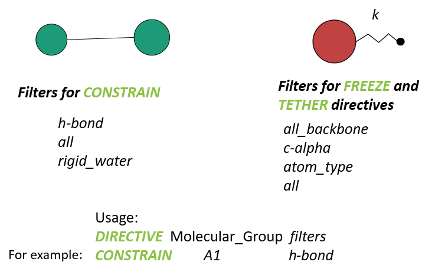

DL_FIELD control file¶

Control options
DL_FIELD operations can be controlled by users through a single DL_FIELD control file, as shown below.
Control file title. For DL_FIELD 4.7.
1 * Construct DL_POLY output files
0 * Unuse slot.
charmm22_prot * Type of force field require (see list below for choices).
kcal/mol * Energy unit: kcal/mol, kJ/mol, eV, or K.
normal * Conversion criteria (strict, normal, loose)
1 * Bond type (0=default, 1=harmonic , 2=Morse)
1 * Angle type (0=default, 1=harmonic, 2=harmonic cos)
none * Include user-defined information. Put 'none' or a .udff filename
1 * Verbosity mode: 1 = on, 0 = off
Examples/sod1.pdb * Configuration file.
none * Output file in PDB. Put 'none' if not needed.
0 0.1 mol/dm^3 15.0 * Solution Maker: on/off, density, unit, cutoff)
0 * Optimise FIELD output size, if possible? 1=yes 0=no
2 * Atom display: 1 = DL_FIELD format. 2 = Standard format
2 * Vdw display format: 1 = 12-6 format 2 = LJ format
default * Epsilon mixing rule (organic FF only) : default, or 1 = geometric, 2 = arithmatic
default * Sigma mixing rule (organic FF only) : default, or 1 = geometric, 2 = arithmatic
1 * Epsilon mixing rule (inorganic FF only) : 1 = geometric 2 = arithmatic
2 * Sigma mixing rule (inorganic FF only) : 1 = geometric 2 = arithmatic
1 * Epsilon mixing rule (BETWEEN different FF) : 1 = geometric 2 = arithmatic
2 * Sigma mixing rule (BETWEEN different FF): 1 = geometric 2 = arithmatic
0 * Display additional info. for protein 1=Yes 0=No
0 * Freeze atoms? 1 = Yes (see below) 0 = No
0 * Tether atoms? 1 = Yes (see below) 0 = No
1 * Constrain bonds? 1 = Yes (see below) 0 = No
0 * Apply rigid body? 1 = Yes (see below) 0 = No
0 * Periodic condition ? 0=no, other number = type of box (see below)
60.0 0.0 0.0 * Cell vector a (x, y, z)
0.0 60.0 0.0 * Cell vector b (x, y, z)
0.0 0.0 60.0 * Cell vector c (x, y, z)
default * 1-4 scaling for coulombic (put default or x for scaling=x)
default * 1-4 scaling for vdw (put default or x for scaling=x)
0 300.0 * Include velocity? 1=yes, 0=no and scaling temperature.
1 * Position solute at origin? 1 = yes, 0=no
none 1.9 * Solvate model? none or specify solvent (see below) and distance criteria.
0 10.0 * Add counter ions? 1=yes, 0=no, minimum distance from solute
0 * MM energy calculation. 1=Yes, 0=No
20.0 * Cut off for electrostatic energy calculation (angstrom)
20.0 * Cut off for vdw energy calculation (angstrom)
************* DL_POLY control ******************
0 * Run DL_POLY program
DLPOLY.Z * DL_POLY executable filename
/home/usr/ * absolute path to DL_POLY program
1 * MM calculation 1=on 0=off
0 3 * Equilibration on(1)/off(0) level (1,2 or 3)
1000 * Timestep for DL_POLY runs.
8.0 * cutoff (vdw and electrostatic)
1000 * Time limit for DL_POLY run (in seconds)
########################################################
Atom state specification: type Molecular_Group filter [value]
FREEZE ORG1 cp
FREEZE ORG2 CT
RIGID A
TETHER CLY st 100.0
CONSTRAIN SOD1 h-bond
#########################################################
Please do not remove those '####' lines.
All select atom commands must be included within the two '####' lines
Some remarks...
...
...
...
This is the default control file, dl_field.control from DL_FIELD software package. The control file contains all the available options in DL_FIELD. Each line contains an option followed by a brief statement, describing all the available choices.
Warning
Do not change the sequence of these options, nor completely remove the comment section in each statement. This can lead to incorrect reading of the control file.
It shows the CHARMM22_prot FF scheme will be used as the FF model with energy unit kcal/mol. The input file is sod1.pdb, which is located in the Examples/ directory. Please consult DL_FIELD User manual for more details about the options in the control file.
For more details about the use of other control options, please consult DL_FIELD User Manual.
DL_POLY Control Section
DL_FIELD control file also contains a section called the DL_POLY Control section. It allows users to run DL_POLY program via a fork process, by using the CONFIG and FIELD files straight after the FF model setup process.
Note
The DL_POLY control section only applicable to DL_FIELD program compiled in the Linux environment, including cygwin or WSL within the Window system. This control section will only carry out after the FF model setup process, and therefore, will not affect the outcome of dl_poly.CONFIG and dl_poly.FIELD files.
To use this feature, a pre-compiled DL_POLY program must be available and file path specified. Then, users can run DL_POLY in one of the two choices available: a zero-step run, or equilibration runs. The formal is also called the molecular mechanic (MM) single-point calculation. This basically calculates the energy of the system without carrying out the dynamics.
The other option is the equilibration runs, which comes with up to three tiers, or levels. Strictly speaking, this option does not properly equilibrate your system. Rather, it is useful if your initial configuration is in a high-energy state and successive tiers of running DL_POLY will attempt to ‘unlock’ any high-conformation states in your system. For instance, atoms that are too close to each other or molecular structures in some strained configurations.
The higher the energy (or more strain) in your system, the higher tiers would be needed to relax the system. Each equilibration level comes with a different DL_POLY CONTROL file to run the simulation. After each run, DL_POLY output files will be saved and tagged with a level number, in the forms CONTROLX, STATISX and OUTPUTX, where X is the equilibration number of either 1, 2 or 3.
The final relaxed configuration would be the DL_POLY CONFIG file, which can be used to carry out normal equilibration runs, perhaps in a HPC system.
Atom state specification
This section is located within two lines consist of hashes (###################). It contains a series of directives to define the states of atoms that will affect the motions of atoms in DL_POLY runs. DL_FIELD permits four different atom states: (1) bond constrains, (2) freeze atoms, (3) tether atom (attach an atom by an imaginary spring to a fixed point, usually the center position of the atom in the initial configuration), and (4) rigid body.
Each atom state must be defined with the corresponding directives: CONSTRAIN, FREEZE, TETHER and RIGID, respectively. Diagram below illustrates the use of these directives.
{kind=link}
In general, the Molecular Group must be specified, to which the atom states will be applied. After that, filters will indicate which atoms within the Molecular Group the states will be applied.
For instance, the statement:
CONSTRAIN A1 h_bond
means all molecular bonds in the Molecular Group A1 that contain the hydrogen atoms will be constrained. The constrained bonds will be listed accordingly in the dl_poly.FIELD file. When running DL_POLY, the SHAKE algorithm will automatically apply to these bonds.
Similarly, the statement:
TETHER A2 c-alpha 200.0
would mean all C-alpha atoms in the protein backbone, that belongs to the Molecular Group A2, will be tethered to the points centered at the initial positions of the atoms, with a spring constant of 200.0 energy units (the unit is specified in the DL_FIELD control files).
Warning
If the Molecular Group specified does not match with the input configuration file, then the atom state would not be applied. DL_FIELD will not register this as an error.
Finally, to activate the Atom state specification, the option switch in the control must be switched on. For instance, in the control file example shown above, the constrain bond option is switched on (1). This means the CONSTRAIN directive will be applied to atoms belong to the Molecular Group SOD1.